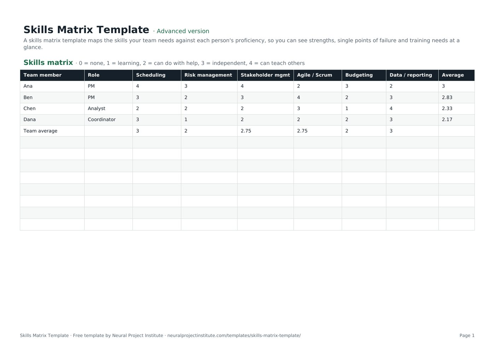

Templates · Business & strategy
Free Skills Matrix Template (Excel, Google Sheets, PDF)
This free skills matrix template maps the skills your team needs against each person's proficiency on a simple 0 to 4 scale, so you can see strengths, gaps and single points of failure at a glance. Download it in Google Sheets, Excel or PDF at beginner, advanced or expert level, with no sign-up, then overwrite the four sample team members with your own.

Key takeaways
- A skills matrix is a grid of people against skills, with a proficiency rating in every cell, that shows who can do what and how well.
- Agree what each rating means before anyone scores themselves: the template's 0-4 scale runs from none to can teach others.
- Read the matrix by column as well as by row: low team averages show weak skills, and skills only one person rates 3 or 4 are a key-person risk.
- Combine self-assessment with a manager or peer calibration conversation so ratings are consistent across the team.
- Turn every finding into an action (training, pairing, hiring or a staffing change) and refresh the matrix about twice a year.
Free download · no sign-up
Get the skills matrix template
Pick your level and format: Google Sheets, Excel or a print-ready PDF. Spreadsheets include dropdowns, formulas and sample rows you can overwrite.
What is a skills matrix?
A skills matrix is a grid that lists team members down one side and the skills the team needs across the top, with a proficiency rating in every cell. It shows at a glance who can do what and how well, where the team is strong, which skills are thin, and who depends on a single expert, so managers can plan training, staffing and hiring.
You will also see it called a skill matrix, a competency grid or a cross-training matrix. Whatever the name, it replaces gut feel about who is good at what with a shared picture the team has agreed on.
Project managers use a skills matrix to staff projects and spot delivery risks; team leads use it for cross-training and cover; HR and learning teams use it to target training budgets. If you are building your own capability as a project manager, our guide to project management skills explains the hard and soft skills that typically appear as columns in a PM team's matrix.
What is in this skills matrix template
The template has one data tab, Skills matrix, with four sample team members (Ana, Ben, Chen and Dana) rated against six project management skills. A note at the top of the sheet explains the rating scale. Here is a live preview of the advanced version:
| Team member | Role | Scheduling | Risk management | Stakeholder mgmt | Agile / Scrum | Budgeting | Data / reporting | Average |
|---|---|---|---|---|---|---|---|---|
| Ana | PM | 4 | 3 | 4 | 2 | 3 | 2 | 3 |
| Ben | PM | 3 | 2 | 3 | 4 | 2 | 3 | 2.83 |
| Chen | Analyst | 2 | 2 | 2 | 3 | 1 | 4 | 2.33 |
| Dana | Coordinator | 3 | 1 | 2 | 2 | 2 | 3 | 2.17 |
| Team average | 3 | 2 | 2.75 | 2.75 | 2 | 3 |
Sample rows are examples: replace them with your own.
- Skills matrix: Team member, Role, Scheduling, Risk management, Stakeholder mgmt, Agile / Scrum, Budgeting, Data / reporting, Average
The columns explained
- Team member: one row per person. Use full names or initials, depending on who will see the file.
- Role: the person's job title or project role, such as PM, Analyst or Coordinator. Filter by this column to compare people in the same role.
- Six skill columns: Scheduling, Risk management, Stakeholder mgmt, Agile / Scrum, Budgeting and Data / reporting. These are examples for a project team: rename them to the skills your own team needs.
- Average: each person's mean rating across the six skills, calculated with an AVERAGE formula.
- Team average row: the last sample row averages each skill column across the team, so you can see which skills are strongest and weakest overall.
The 0 to 4 rating scale
Every skill cell takes a number from 0 to 4. Five levels are enough to show real differences without forcing people to agonise over fine distinctions. Agree the descriptions below (or your own version) with the team before anyone rates themselves.
| Rating | Label | What it looks like in practice | Typical action |
|---|---|---|---|
| 0 | None | Has not done this and does not yet know how | Train only if the role or project needs it |
| 1 | Learning | Understands the basics or is in training; needs close guidance | Formal training plus a mentor |
| 2 | Can do with help | Can do routine work but checks in on anything unusual | Stretch assignments with review |
| 3 | Independent | Does the work reliably without supervision, including most exceptions | Use on projects; ready to deputise |
| 4 | Can teach others | Recognised go-to person; can coach, review and improve the method | Mentor others; share knowledge |
Other scales are common: some organisations rate 1 to 5, others 0 to 3, and some add a separate interest score. Any of them works if everyone uses the same definitions. What matters most is that a 3 means the same thing for every person and every skill.
Beginner, advanced and expert versions
| Version | What you get | Best for |
|---|---|---|
| Beginner | One tab with six columns (Team member, Role, Scheduling, Risk management, Stakeholder mgmt, Agile / Scrum) and the Team average row | A first, quick matrix for a small team |
| Advanced | The full Skills matrix tab with all six skill columns, a personal Average for each person and the Team average row | Most teams and projects |
| Expert | The advanced tab plus an Instructions tab with the steps and tips from this page, and a Revision history tab to log each update | Matrices that are reviewed regularly or shared with HR or a PMO |
Every spreadsheet version has a frozen header row and filters, so you can sort by any skill to see who is strongest, or filter by role. The PDF is a print-ready copy for workshops and one-to-ones.
How to create a skills matrix step by step
For a small team you can fill in the template in an hour. Most of the effort, and most of the value, is in agreeing the skills and the rating definitions.
- Decide what the matrix is for. Staffing a project, planning training, reducing key-person risk and preparing for a reorganisation need different skill lists. Write the purpose in one sentence and decide the scope: one team, one project or a whole department.
- Choose six to twelve skills. Start from the work, not from job titles: look at your project plan, work breakdown structure, role descriptions and upcoming projects. Keep skills specific enough to rate ("Budget forecasting" rather than "Finance") and rename the template's six skill columns to match. Insert extra columns before Average if you need more.
- Agree the rating definitions. Use the 0 to 4 scale above and, for important skills, add one example of what a 3 looks like, such as "builds and maintains a resource-loaded schedule without help".
- Ask each person to self-assess. Self-assessment is quick and makes people part of the process. Ask them to note one piece of evidence for any 3 or 4 rating.
- Calibrate the ratings. The manager reviews each person's scores in a short conversation and, where useful, asks a peer who has worked with them. The aim is consistency across the team, not marking people down.
- Enter the agreed ratings. Replace the sample rows with your team. The personal Average and the Team average row calculate automatically for the sample rows; see the spreadsheet tips below when you add more people.
- Analyse the results. Look at team averages for weak skills, count how many people rate 3 or more in each skill to find single points of failure, and note who rates 4 and could coach others. The worked example below shows how.
- Act and record the actions. Turn each finding into a named action with an owner and a date: training, pairing, a staffing change or a hiring decision. Record training in a training plan template and wider improvements in an action plan template.
Spreadsheet tips
- Adding more people: the Team average formulas cover the four sample rows (for example =AVERAGE(C6:C9)). Insert new rows between the first and last sample rows so the ranges expand automatically, or edit the ranges to include every person.
- Copy the Average formula down: the empty rows below the sample do not contain the personal Average formula, so copy it from a sample row into each new row.
- Add a coverage count: under the Team average row, add a row called "People at 3+" with a formula such as =COUNTIF(C6:C9,">=3") in each skill column. Any skill showing 0 or 1 needs attention.
- Make a heatmap: select the rating cells and apply a colour scale (Format > Conditional formatting > Colour scale in Google Sheets; Home > Conditional Formatting > Color Scales in Excel). Red-to-green makes gaps jump out.
- Keep blanks and zeros distinct: a blank means not yet rated; a 0 means no skill. AVERAGE ignores blanks but counts zeros, so fill in every cell before you read the averages.
Skills matrix example: reading the sample data
The sample data describes a four-person project team: two project managers (Ana and Ben), an analyst (Chen) and a coordinator (Dana). Here is what the matrix shows when you read it column by column:
| Skill | Team average | People rated 3 or 4 | Rated 4 (can teach) | What it tells you |
|---|---|---|---|---|
| Scheduling | 3.00 | 3 (Ana, Ben, Dana) | Ana | A strength with good cover |
| Risk management | 2.00 | 1 (Ana) | Nobody | Weak skill and a single point of failure |
| Stakeholder mgmt | 2.75 | 2 (Ana, Ben) | Ana | Adequate, but only the two PMs can do it alone |
| Agile / Scrum | 2.75 | 2 (Ben, Chen) | Ben | Adequate, with an internal coach available |
| Budgeting | 2.00 | 1 (Ana) | Nobody | Weak skill and a single point of failure |
| Data / reporting | 3.00 | 3 (Ben, Chen, Dana) | Chen | A strength with good cover |
What the example shows
- Two key-person risks. Only Ana can do risk management and budgeting independently. If she is on leave, moves to another project or leaves, the team loses both capabilities at once. That is a delivery risk worth recording in the project's risk register.
- Two clear strengths. Scheduling and data and reporting have three capable people each, so the team can absorb absence there.
- Internal coaches. Ana (scheduling, stakeholder management), Ben (Agile / Scrum) and Chen (data and reporting) all rate 4, so much of the development can happen through pairing rather than paid courses.
- Personal averages need context. Ana averages 3.00, Ben 2.83, Chen 2.33 and Dana 2.17. That does not make Dana the weakest team member: a coordinator is not expected to match a PM on budgeting. Compare people with the needs of their role, not with each other.
Actions from the example
| Finding | Action | Owner | Target |
|---|---|---|---|
| Risk management depends on Ana | Ben co-runs the next two risk reviews with Ana; Dana (rated 1) takes a short risk management course | Ana and the team lead | Ben to 3 and Dana to 2 by the next review |
| Budgeting depends on Ana | Ben shadows Ana on the monthly forecast; Chen (rated 1) learns the cost-tracking basics | Ana | Ben to 3 within six months |
| Agile / Scrum is uneven | Ben runs a short internal workshop for Ana and Dana | Ben | Ana and Dana to 3 |
| Data and reporting is strong | Chen documents the reporting process so others can step in | Chen | Written guide in place |
How to use a skills matrix in project management
A skills matrix is most useful when you connect it to decisions you already make about people, risk and time.
Staffing projects and allocating resources
When you assign work, match the skills each work package needs with the people who rate 3 or 4, and deliberately pair a 4 with a 1 or 2 where you have time for development. Our guide to resource allocation explains how to assign people across tasks and projects, and project resources covers the wider mix of people, equipment and budget.
Capacity planning
A skills matrix tells you who is able to do the work; capacity planning tells you whether they have the hours. You need both: a team with plenty of availability can still be blocked if the one person who can do budgeting is fully booked. Read capacity planning in project management, or Agile capacity planning if you plan in sprints. If a key person is overloaded, resource leveling can rebalance the schedule.
Managing key-person risk
Single points of failure are project risks like any other. Record them with a cause, an owner and a response such as cross-training, documentation or a backup supplier.
Building cross-functional Agile teams
Agile teams aim to have every skill needed to deliver within the team, and many teams encourage T-shaped people with depth in one area and working knowledge of others. A skills matrix makes that visible and helps the team decide who learns what next. Our guides to what an Agile team is and Scrum team roles explain the structures.
Planning training and hiring
Low team averages that cannot be closed by pairing become training or recruitment needs. Use the gap between the rating you have and the rating the role needs to prioritise: a 1 where you need a 3 matters more than a 2 where you need a 3. For individual project managers, our project management certification guide covers formal routes to raise a rating.
Skills matrix vs competency matrix vs RACI matrix
These documents are easy to confuse because several of them are grids of people against something. Each answers a different question:
| Document | Question it answers | Rows and columns | Use it when |
|---|---|---|---|
| Skills matrix | Who can do what, and how well? | People against skills, with proficiency ratings | Staffing, cross-training, key-person risk |
| Competency matrix | Does each person meet the expected standard for their role? | Roles or people against competencies (skills, knowledge and behaviours) and expected levels | Career frameworks, performance and promotion |
| RACI matrix | Who is responsible for what on this project? | Tasks or deliverables against people or roles, marked R, A, C or I | Clarifying ownership and decisions |
| Training plan | Who will learn what, how, by when and at what cost? | Learners against training activities, dates and costs | Acting on the gaps a skills matrix finds |
| Gap analysis | Where are we now, where do we want to be and how do we close the gap? | Areas against current state, future state and actions | Organisation or process gaps, not just people's skills |
A common sequence is: build the skills matrix, staff the project, then record who does what in a RACI matrix template. Our RACI matrix guide explains responsibility assignment in detail. For broader capability gaps across processes or tools, a gap analysis template is the better fit.
Common skills matrix mistakes
- Too many skills. Forty columns produce a matrix nobody updates. Keep to the skills that affect delivery and split the team into several matrices if needed.
- Vague skills. "Communication" is hard to rate consistently; "Running steering group meetings" is easy.
- No agreed definitions. Without them, confident people rate high and modest people rate low, and the matrix measures personality rather than skill.
- Using it as a performance score. If ratings feed directly into pay or appraisals, people will inflate them. Keep the matrix a planning tool and say so.
- Building it once. Skills change after every project and course. A matrix that is a year old is a guess.
- No actions. A matrix without a training plan, staffing change or hiring decision attached is just a chart.
Tips for keeping ratings accurate and fair
- Explain the purpose first. Tell the team what the matrix will and will not be used for before you ask for ratings.
- Ask for evidence. For any 3 or 4, ask for a recent example: a schedule they built, a risk review they ran, a report they own.
- Calibrate as a group where trust is high. A 30-minute team session comparing a few ratings quickly aligns what a 2 and a 3 mean.
- Consider an interest column. Some teams add a simple yes or no for whether the person wants to develop a skill. It helps you pick who to train; it is an optional addition, not part of the template.
- Mind privacy. Ratings are personal information. Share the full matrix only with people who need it and keep the team view to averages and coverage if that suits your culture. Check your organisation's HR policy.
- Refresh it twice a year, and after major training, a reorganisation, or a project's lessons learned review. The expert version's Revision history tab is there to log each update.
If you run people-related projects such as onboarding or a reorganisation, our guide to HR project management shows how a skills matrix fits alongside the rest of the plan.
Related templates and guides
A skills matrix is usually the first step in a short chain of documents: the matrix finds the gaps, a training plan closes them, and the project plan and RACI matrix put the right people on the right work. Goals for team development can sit in an OKR template, and staffing decisions feed straight into your project plan template.
 RACI Matrix TemplateFree RACI matrix template to map who is Responsible, Accountable, Consulted and Informed…Beginner · Advanced · Expert
RACI Matrix TemplateFree RACI matrix template to map who is Responsible, Accountable, Consulted and Informed…Beginner · Advanced · Expert Communication Plan TemplateFree project communication plan template: audience, information, channel, frequency,…Beginner · Advanced · Expert
Communication Plan TemplateFree project communication plan template: audience, information, channel, frequency,…Beginner · Advanced · Expert OKR TemplateFree OKR template to set objectives and key results, track progress and score them each…Beginner · Advanced · Expert
OKR TemplateFree OKR template to set objectives and key results, track progress and score them each…Beginner · Advanced · Expert Training Plan TemplateFree employee training plan template: skills needed, training activities, delivery…Beginner · Advanced · Expert
Training Plan TemplateFree employee training plan template: skills needed, training activities, delivery…Beginner · Advanced · Expert Business Plan TemplateFree business plan template with guided sections, a one-page summary and 3-year financial…Beginner · Advanced · Expert
Business Plan TemplateFree business plan template with guided sections, a one-page summary and 3-year financial…Beginner · Advanced · Expert Project Proposal TemplateFree project proposal template: problem, proposed solution, objectives, scope, timeline,…Beginner · Advanced · Expert
Project Proposal TemplateFree project proposal template: problem, proposed solution, objectives, scope, timeline,…Beginner · Advanced · Expert- Project Management Skills: Hard, Soft and How to Build Them
- Resource Allocation in Project Management: Steps and Examples
- Capacity Planning in Project Management: Guide and Example
To understand the roles you are staffing, read our guide to project manager roles and responsibilities.
Frequently asked questions
What is a skills matrix template?
A skills matrix template is a ready-made grid of team members against the skills your team needs, with a proficiency rating in each cell. This one uses a 0 to 4 scale and calculates each person's average and a team average for every skill.
Is this skills matrix template free?
Yes. The skills matrix template is free to download in Google Sheets, Excel and PDF, at beginner, advanced and expert level, with no sign-up.
How do I create a skills matrix in Excel or Google Sheets?
List team members in the first column and skills across the top, agree a rating scale, enter a rating for every person and skill, then add AVERAGE formulas for each person and each skill. The template already has this structure, so you only need to rename the skills and enter your team.
What rating scale should a skills matrix use?
Use four or five clearly defined levels. This template uses 0 = none, 1 = learning, 2 = can do with help, 3 = independent and 4 = can teach others. The exact scale matters less than everyone using the same definitions.
What is the difference between a skills matrix and a competency matrix?
A skills matrix records how well people can perform specific skills. A competency matrix is usually broader, covering skills, knowledge and behaviours against the level expected for each role.
What is a skills gap matrix?
A skills gap matrix compares the rating each person or role needs with the rating they have today. You can use this template that way by adding a target rating for each skill and comparing it with the actual ratings.
How many skills should a skills matrix include?
Usually six to twelve for a single team. Fewer and you miss important gaps; many more and the matrix becomes hard to rate and keep up to date.
Who should fill in the skills matrix?
Team members self-assess first, then their manager reviews the ratings with them, ideally with input from a peer.
How often should a skills matrix be updated?
About every six months, and after major training, a team change or the end of a large project.
Can I turn the skills matrix template into a heatmap?
Yes. Select the rating cells and apply a colour scale with conditional formatting in Excel or Google Sheets, for example red for 0 and green for 4.
How do I find single points of failure in a skills matrix?
Count how many people rate 3 or 4 in each skill column, for example with a COUNTIF formula. Any skill where only one person (or nobody) is independent is a key-person risk that needs cross-training or a backup.
Can I use the skills matrix template for project staffing?
Yes. Match the skills each task needs with the people rated 3 or 4, and check availability with resource allocation and capacity planning.
Is a skills matrix the same as a RACI matrix?
No. A skills matrix shows capability: who can do the work. A RACI matrix shows responsibility: who does the work, who is accountable, and who is consulted or informed.
What should I do after completing a skills matrix?
Turn each gap or single point of failure into an action with an owner and date, record training in a training plan, and review progress at the next update.
What is the difference between the beginner, advanced and expert skills matrix template?
The beginner version has one tab with four skill columns and a team average row. The advanced version has all six skills plus personal and team averages. The expert version adds an Instructions tab and a Revision history tab.